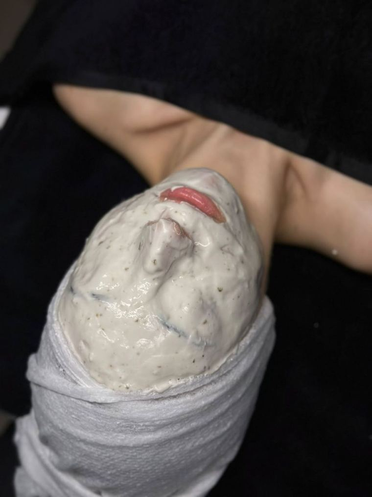
Cilt Bakımı
Cilt analiziyle başlayan; gözenek temizliği, maske ve nem adımlarıyla arındırıcı, yenileyici profesyonel cilt bakımı.
Güzelliğiniz,bizim sanatımız.
Yenişehir'deki stüdyomuzda cilt bakımından ipek kirpiğe, kalıcı ojeden protez tırnağa; size ayrılmış sakin bir ortamda kişiye özel ve özenli dokunuşlar.
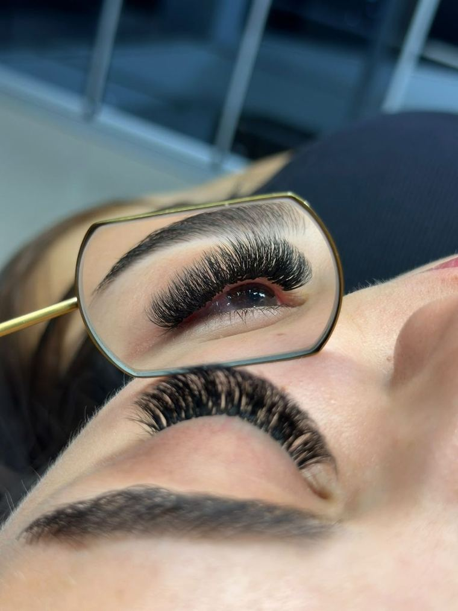
Mersin Yenişehir'deki stüdyomuzda her uygulama; cildinizi, tırnaklarınızı ve tarzınızı dinleyerek size özel planlanır.

Cilt analiziyle başlayan; gözenek temizliği, maske ve nem adımlarıyla arındırıcı, yenileyici profesyonel cilt bakımı.
Göz yapınıza uygun tasarlanan, doğal ya da hacimli ipek kirpik; düzenli dolgu ile her gün bakımlı bakışlar.
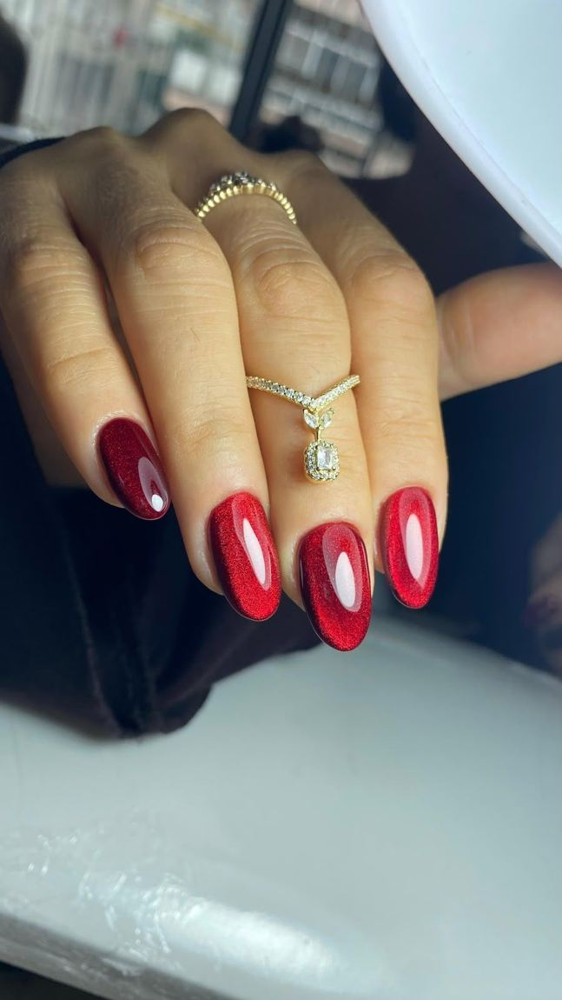
Tırnak bakımıyla birlikte uygulanan, haftalarca parlak ve kusursuz kalan kalıcı oje; renk seçimi sizden.
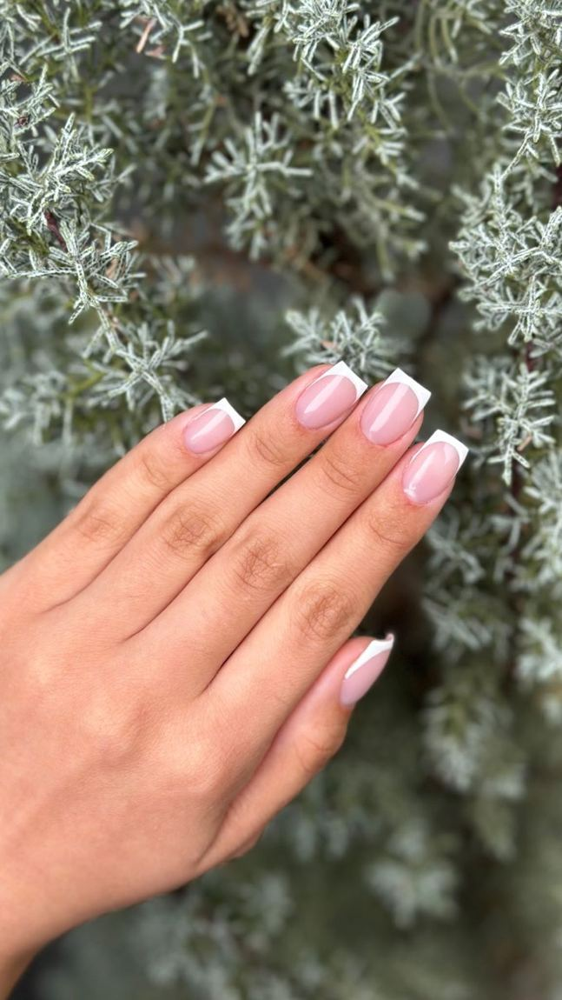
French, nude ya da tasarımlı; istediğiniz form ve uzunlukta jel ve protez tırnak uygulaması.
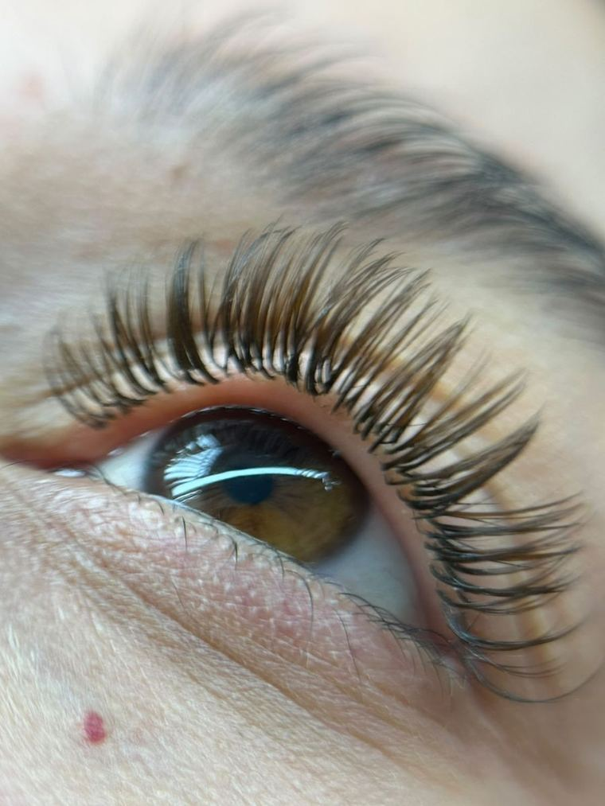
Kaş laminasyonu ile düzenli, dolgun kaşlar; kirpik lifting ile kalkık ve belirgin kirpikler.
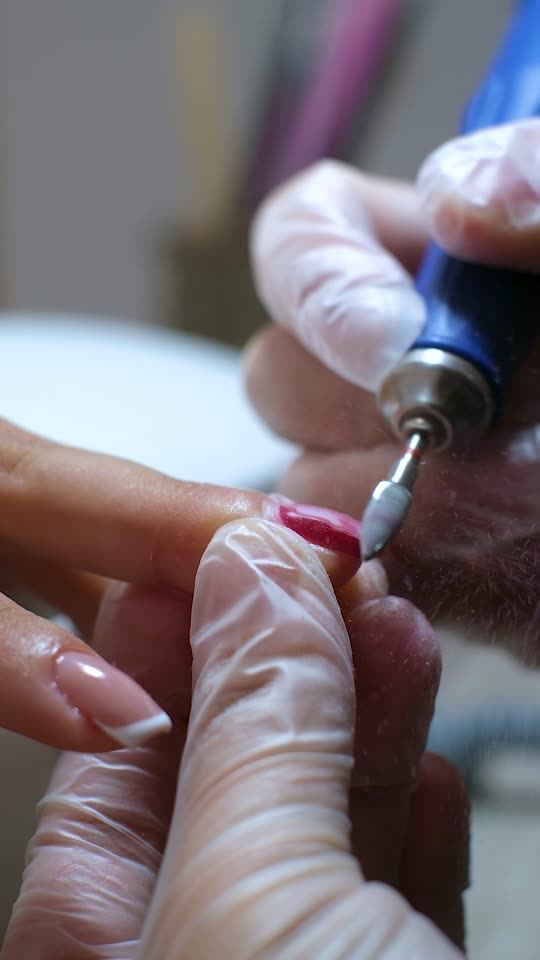
Eller ve ayaklar için hijyenik, rahatlatıcı bakım; tırnak şekillendirme ve kütikül bakımı.
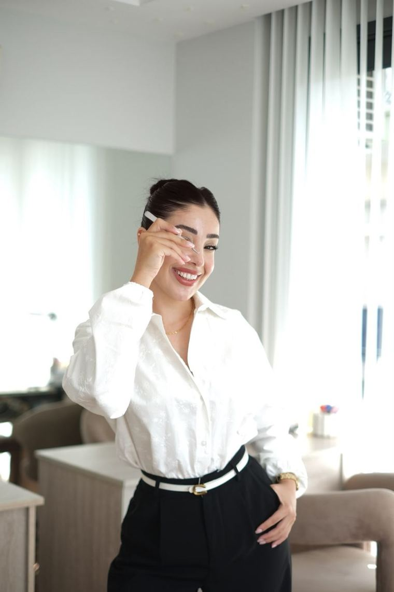
İhtiyacınızı birlikte belirleyelim, size en uygun uygulamayı ve bakım planını seçelim.
Uygulama süreleri ve güncel fiyatlar için WhatsApp'tan bize yazabilirsiniz.
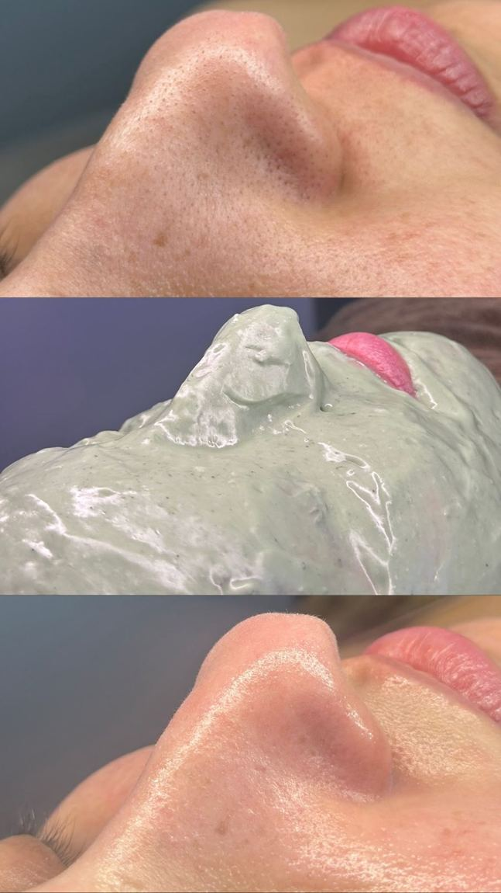
ÖnceBakımSonraProfesyonel cilt bakımımız, cildinizi tanımakla başlar. Gözenekleri arındırır, cildi nemle buluşturur ve daha pürüzsüz, aydınlık bir görünüm kazandırır.
Cilt tipinizi ve ihtiyaçlarınızı birlikte değerlendiriyoruz.
Derinlemesine temizlik ve cildinize uygun maske uygulaması.
Nem ve bakım adımlarıyla tazelenmiş, dinlenmiş bir cilt.
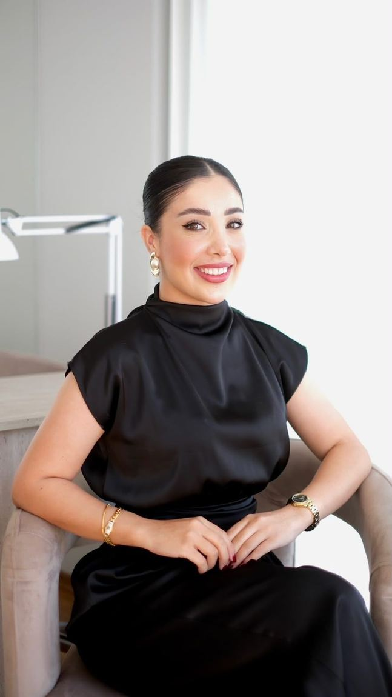
“Güzel hissetmek,
kendinle başlar.”
Fidan Bayrak Beauty Studio, Mersin'in Yenişehir ilçesinde, İnönü Mahallesi'ndeki Taş İş Merkezi'nde hizmet veren butik bir güzellik stüdyosudur. Güzelliğin herkese özel olduğuna inanıyoruz. Stüdyomuzda sizi dinliyor, ihtiyaçlarınızı anlıyor ve kendinize iyi bakmanız için sakin, özenli bir alan sunuyoruz.
İlk karşılamadan son dokunuşa kadar; rahatlığınız, hijyen ve uygulama kalitesi bizim için önceliklidir.
Her uygulama, tarzınızı yansıtan küçük bir güzellik hikâyesi.
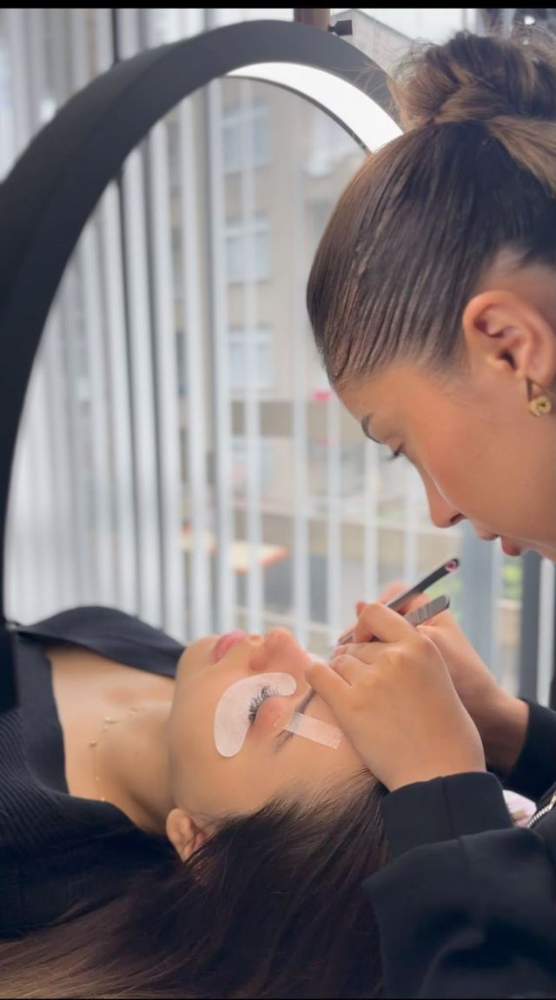
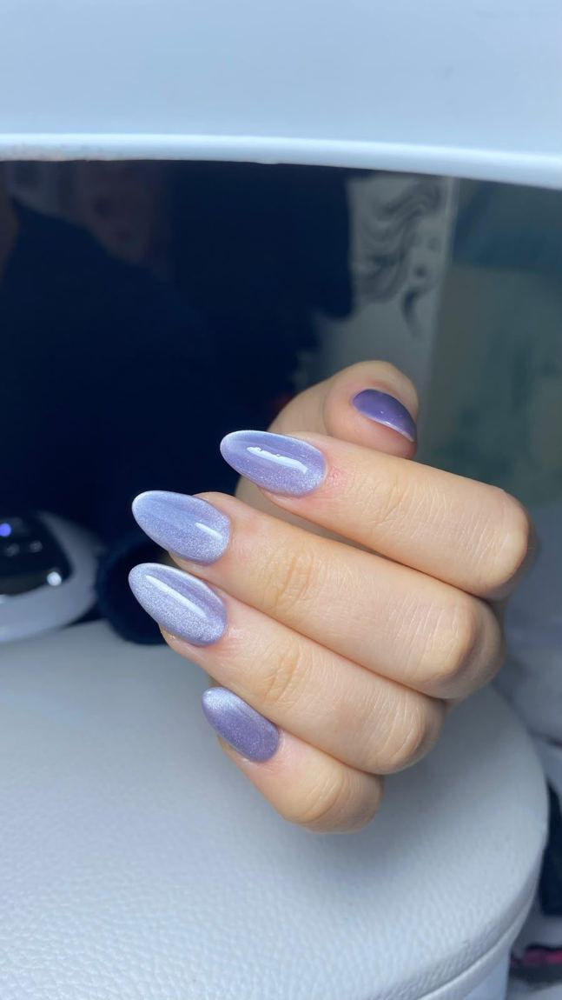
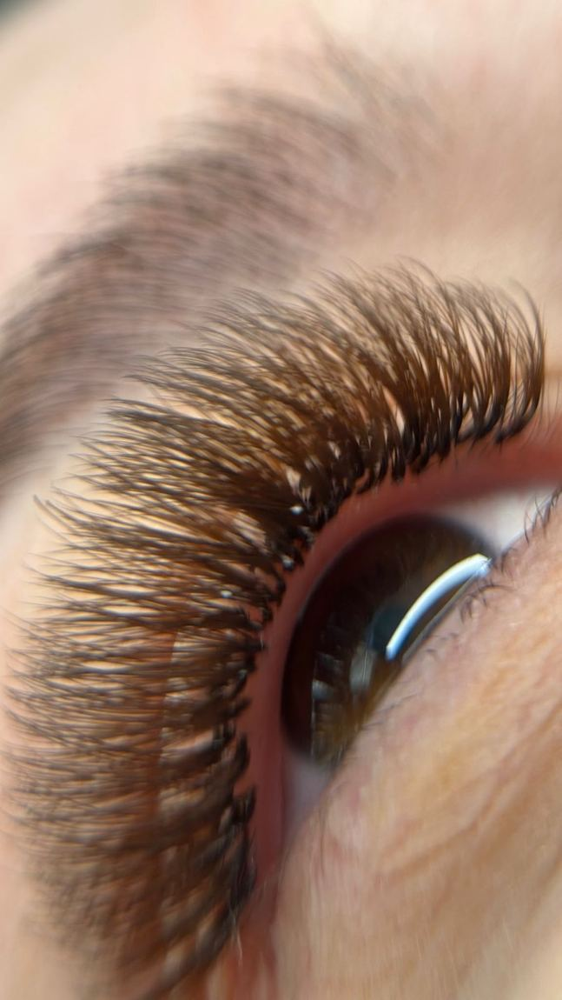
Tırnak uygulamasından memnun kaldığını ve salonu tavsiye ettiğini belirtiyor.
İpek kirpik ve cilt bakımı deneyiminden, ekibin ilgisinden memnun olduğunu paylaşıyor.
Uzun süredir salonu tercih ettiğini; özenli ve istikrarlı çalışmayı takdir ettiğini ifade ediyor.
Aklınıza takılan başka bir şey olursa WhatsApp'tan yazmanız yeterli.
Stüdyomuz Mersin Yenişehir'de; İnönü Mahallesi, 1406 Sokak No: 6, Taş İş Merkezi Kat: 2 Daire: 3 adresindedir. Google Haritalar'dan yol tarifi alabilirsiniz.
WhatsApp'tan ya da 0546 152 33 47 numaralı telefondan bize ulaşabilirsiniz. İstediğiniz hizmeti seçin, uygun gün ve saati birlikte belirleyelim. Pazartesi–Cumartesi 08.00–21.00 arası açığız.
Cildin yenilenme döngüsü nedeniyle genellikle 3–4 haftada bir profesyonel cilt bakımı önerilir. İlk seansta cilt tipinizi değerlendirip size uygun bakım planını birlikte oluşturuyoruz.
Doğal kirpikler döküldükçe ipek kirpikler de azalır; bu yüzden ortalama 2–3 haftada bir dolgu önerilir. Doğru bakımla kirpikleriniz her gün düzenli görünür.
Kalıcı oje kendi tırnağınızın üzerine uygulanır ve tırnağı uzatmaz. Protez tırnak ise tırnağa istediğiniz uzunluk ve formu verir; French, nude veya tasarımlı yapılabilir.
Kişiden kişiye değişmekle birlikte etkisi genellikle 6–8 hafta sürer. Kaşlarınız daha düzenli ve dolgun, kirpikleriniz daha kalkık ve belirgin görünür.
Fiyatlar uygulamaya ve kişisel ihtiyaçlarınıza göre değiştiği için güncel fiyat bilgisini WhatsApp'tan veya telefonla paylaşıyoruz.
Yenişehir'deki stüdyomuzda sizi ağırlamaktan mutluluk duyarız. Randevu ve bilgi için bize WhatsApp'tan ulaşabilirsiniz.
Pazartesi – Cumartesi
08.00 – 21.00
Pazar kapalı